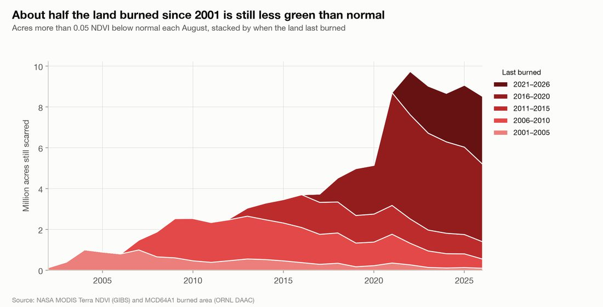
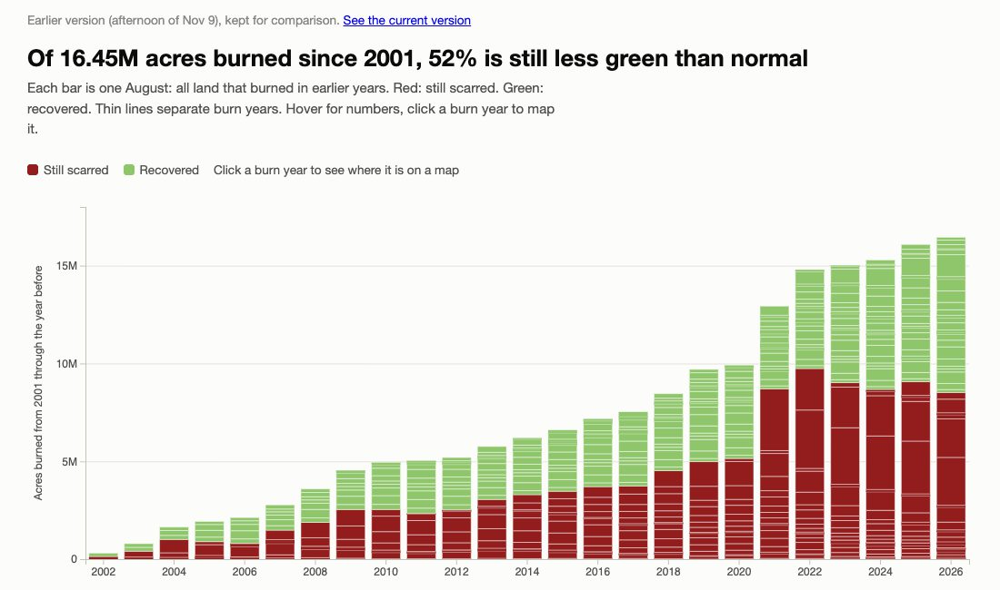
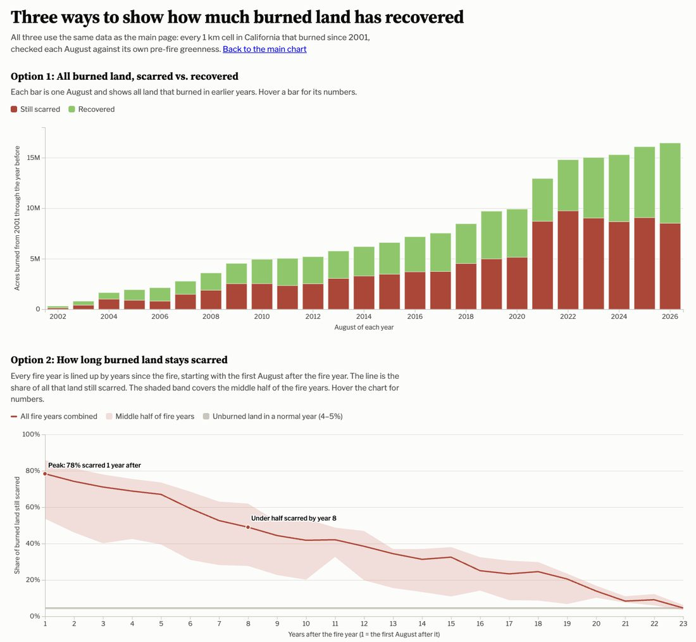
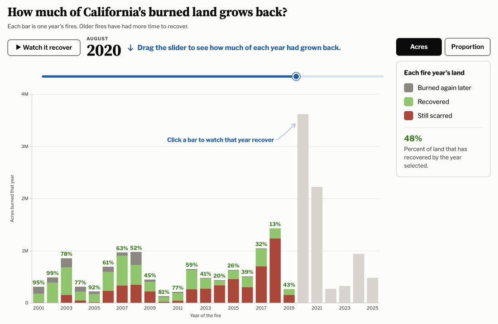
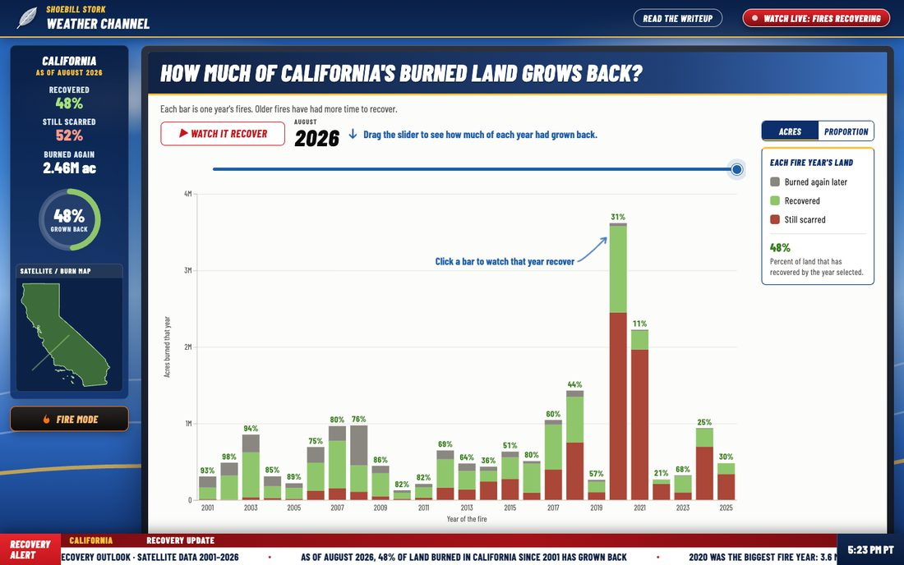

Writeup
How much of California's burned land grows back? · DSC 106 Project 3
Team
- Connor Day · coday@ucsd.edu
- Ethan Dam · eddam@ucsd.edu
- Sophie Xie · sax006@ucsd.edu
Our question
Since we hear all the time that California is constantly burning, the questions we wanted to answer were:
Does California recover from all the burning it undergoes? If so, how long does it take to recover?
Data
Everything comes from two NASA satellite products, both from the MODIS sensor and both covering 2001 to 2026:
- Where and when land burned: MCD64A1, NASA's monthly burned area product, at about 500 m. We downloaded it from the ORNL DAAC web service in 200 km boxes, since that service only returns small areas at a time, and kept every burned pixel inside California with the month it burned.
- How green the land is: monthly MODIS Terra NDVI (a standard greenness index) from NASA GIBS. GIBS only serves map images, not numbers, so we downloaded each month as a picture at about 1 km and used the layer's published color key to turn every pixel's color back into an NDVI value. We checked these against NASA's numeric NDVI data to make sure the conversion was right.
We put both on the same 1 km grid of California. A grid cell counts as burned in a year if at least half of it burned that year.
From greenness to "scarred" and "recovered"
For every burned cell we look at its August greenness each year and compare it with what is normal for that exact spot:
- Normal is the cell's median August NDVI from the years before it first burned. (Land that burned in 2001 or 2002 doesn't have enough clean years before the fire, so it uses every year.)
- Remove the weather. A dry year makes all the land in a region browner, burned or not. So each year we subtract how much never-burned land within about 25 km changed from its own normal; what's left is mostly the fire.
- Scarred means the cell is still more than 0.05 NDVI below normal after that adjustment. Everything else counts as recovered.
- Burned again. If land burns a second time, it moves to the newer fire year, and the older year shows it as "burned again later." This way, no acre is counted twice, and the percent recovered only counts land that hasn't burned since.
The site loads one small CSV (scarred, recovered and burned-again acres for each fire year
in each August) and one JSON file per fire year with the cells for its map. The Python
scripts that build these are in our exploratory/ folder.
Design rationale
Visual encodings
For the color encodings, we chose a faded brick red instead of a bright red, so it emulates a healed scar more than an active fire. We used a green to represent recovered, because we're using greenness to measure how the land is recovering from the burns. We use gray to indicate "burned again later," because it is not the main point of our visualization, yet also important to keep in our vis. The green numbers above the bars are a bold green to also mirror the green of the recovered bar, to draw the parallel of recovery.
We put the instructions in blue so that it doesn't conflict with any of the other colors, and so it also draws the viewer's attention when you first see it to incite them to complete an action. Also, before the user interacts with our visual at all, the arrows blink and move to indicate that there's an interactive element in our graph. The big red play button is a reflection of our weather channel theme, as well as an indicator for the user to click on.
There are a lot more smaller visual encodings, including but not limited to:
- the blue boxes on the map to magnify the largest burn areas for the viewer's convenience
- text annotations to guide the user and let them know how they can interact with our visual
- color/theme coded legend and buttons
- the numbers above the bars inform the users the exact percentage of recovery, without having to estimate
- city labels on the map (Redding, Sacramento, San Francisco, Fresno, Los Angeles, San Diego) so users can tell where the fires were
- a "current conditions" sidebar, like a TV weather report, with the recovered and scarred numbers, a dial, and a mini radar map that all update with the slider
- a news ticker along the bottom with key facts from our data
Each bar is one year's fires, and its height is how many acres burned that year. A light gray bar means that fire year hasn't been checked yet in the August on the slider. The map uses the same colors as the bars, so you can read them together.
Interaction
Interactive encodings: the slider lines up with the bars, so that wherever the slider is at, it's right on top of the corresponding year/bar. Clicking on a bar nicely transitions into a bigger version of that bar, and simultaneously opens a map of that land. (Small encodings: where the slider starts when you go back and forth between all years and singular years.) The map is interactive; users are able to drag and zoom to view the burned areas as much as they desire.
Some more features:
- "Watch it recover" plays through every August. The bars change in place instead of growing up from zero.
- The Acres/Proportion toggle switches the bars between acres and percent, since small fire years are hard to see next to 2020
- Hovering over a bar or the map shows the numbers right where the mouse is, and we also made it color coded for an easier read
- Clicking a blue box on the map zooms in on that burn.
- Hovering over a bar turns your mouse into a magnifying glass, or a little fire icon in fire mode!
- You don't have to hit a bar exactly. Hovering or clicking a little above a bar still works, so short bars like 2010 are easy to click.
- The page's link saves what you're looking at (the year, the bar you clicked, and Acres/Proportion), so if you share it, it opens to the same view.
- Clicking the feather at the top turns it into a shoebill
- Clicking the 'fire mode' button turns everything red, and the feather/shoebill are now on fire
Choices we made and why
- Checking greenness in August, not January
- January seemed like the obvious place to start since we count in years, but it turns out, it is the worst month for this. Greenness on the same land typically changes about 0.06 from one January to the next, which is already more than our 0.05 cutoff, so a dry winter would look like fire damage across much of the state. August changes only about 0.02 between years. By August the grass is brown everywhere, so the green that's left is mostly trees and shrubs, which is where fire damage lasts.
- The first check is the August after the fire year
- Most California fires burn between July and November, so the fire year's own August would catch only some of its fires, and often before they had burned. A fire in September 2020 is first checked in August 2021, then August 2022, and so on. Every fire gets a full season before it is measured, and every fire year is measured the same way.
- One bar per fire year, with a slider for time
- Our first chart had one bar per August, with all the land burned so far stacked inside it. It was super confusing, and people read each bar as that year's fire, and it wasn't clear whether green meant "recovered by now" or "recovered during that year." Now, with one bar per fire year, each bar is exactly one year's land, and the slider picks the moment you're looking at. Older fires sit on the left and have had more time to recover, so reading left to right already shows recovery over time.
- Graying out future years instead of hiding them
- When the slider is at an older August, fire years that haven't happened or haven't been checked yet stay on the chart as light gray bars. The axis doesn't jump around while dragging, and you can see how much fire is still coming.
- Removing wet and dry years using nearby unburned land
- A dry year makes all the land browner, burned or not, so without this step a drought would look like fire damage. Comparing each spot with never-burned land around it keeps the measure about fire, not rain.
- Moving reburned land to the newer fire
- A lot of California burns more than once, so counting it in both years would double count it and make recovery look worse than it is, so each acre belongs to the most recent fire that touched it. Unfortunately, the tradeoff is that a lot of the bars contain a huge portion we can't see if it has recovered or still stayed scarred.
- Where the instructions should go
- We needed a way to tell users how they can interact with our map, so adding the blue instructions above the slider and pointing at a bar in the white area helps them with the two most important interactions. There was an iteration where the 'Click a bar to watch that year recover' tag would move with the mouse, but it was way too distracting.
- Magnifying the biggest burns
- At the size of the whole state, most burns are only a few pixels across. The one or two biggest burn areas get a magnified close-up in a blue box, sized to the shape of the burn so it isn't stretched.
- Changing the title
- Our first title was "Do California fires ever recover?" We changed it to "How much of California's burned land grows back?" because the answer isn't a yes or no, and it's the land that grows back, not the fire.
- A weather broadcast theme
- Recovery happens year by year like a forecast, and people already know how to read a weather report: a big title, a "current conditions" readout and a ticker along the bottom. The theme makes the page feel less like a homework chart and gives us natural places for the summary numbers.
Alternatives we tried
Our design changed a lot. These are the main versions we built, in order. Click any picture to see it full size.
-
Nov 3 · Checkpoint
A stacked area chart in Python

Our first prototype showed only the scarred acres each August, layered by when the land last burned, in five shades of red. It showed that the scarred total was growing, but not how much had recovered, and the shades were hard to tell apart. We had also looked at Tulare Lake, which came back in 2023, but dropped it to stay focused on fire.
-
Nov 9
Stacked bars, one per August

Our first D3 version added green for recovered land. Each bar was one August and every acre burned before it, with thin lines between fire years. It was way too difficult to read, and even we got confused as to what the stacks on each bar meant. In addition, it was really hard to distinguish the changes and recovery rates of each year.
-
Nov 9
Comparing three chart types

We knew there needed to be a change on how to communicate and display the concept, but we couldn't think of anything yet. So, we tried a few more bar charts and line graphs. The line graph is not very interactive, and the new bar graph was a good lead to where we are now. We wanted something where you could focus on each individual year and zoom into it, and this seemed perfect.
-
Nov 9–10
One bar per fire year, with a slider

We always had a vision of an interactive slider where the user could see the land data actually recovering in real time at whichever time they chose, so we added one after building the bar chart with individual years. Additionally, the numbers on top of the bars allow the user to see, in real time, the recovery rate of that year. We kept the idea of clicking on a bar and seeing a map, but we added the bar next to it for an even better visual.
-
Nov 10–11
The weather broadcast theme

The website looked plain and boring with just the white background and black font, so one of us had the idea to make it look like a weather channel infographic. That's how the weather/news channel theme was born, and it fits pretty well with our topic. It adds something more fun and interactive for the user as well. For fun, we also added the fire mode, because our topic is focused on fire.
Left: clicking the 2020 bar. Right: fire mode.
What we found
Most burned land does grow back, but it takes a long time. As of August 2026, 48% of the land that burned in California since 2001 has recovered. One year after a fire, about 78% of the land is still scarred. That drops to under half by year 8 and to about 14% by year 20.
2020 was by far the biggest fire year, with about 3.6 million acres, and only 31% of it has recovered so far. Since so much of California burned in the last few years, the statewide number is held down by young fires that haven't had time to grow back yet.
Recovery also isn't one-way. As you can see, the red (scarred) increases over time sometimes in our bars. It's not a glitch—in drought years, many fire years get redder again. In August 2021, 17 of the 19 fire years we had checked looked more scarred than the year before, and in August 2013 it was 10 of 11. Regrowth sometimes dries out in droughts before it can grow into a big, luscious area.
Limitations
- Greenness can't tell regrown forest from shrubs or grass. A forest that came back as brushland can look "recovered" even though it is a different landscape.
- About 4–5% of never-burned land falls below our cutoff in a typical year, so a small part of the red is ordinary year-to-year variation, not fire.
- The 1 km grid and the "half the cell burned" rule miss small fires and blur the edges of big ones.
- Fires from 2026 aren't shown yet, because they haven't had an August after their fire year.
Development process
Who did what: We met up and worked together!
Roughly how long it took, in hours: [~12 hours total]
The parts that took the most time were:
- Getting the data into numbers. GIBS only gives map images, so we had to turn the colors back into NDVI values and check them against NASA's numeric data. The burned area service only returns small boxes, so covering the whole state took many overlapping downloads.
- Deciding what "recovered" means. Picking a fair "normal" for each spot, picking the month (August, after finding out January was too noisy), choosing when to start counting, and removing wet and dry years using nearby unburned land took several rounds of checking results that looked wrong.
- Redesigning the main chart. We went through five versions (see the timeline above) before the one-bar-per-fire-year chart felt easy to read. It was hard to move on from a chart we already thought we settled on, and redesigning the whole thing to visualize it in a completely different way.
- Small details. It took A LOT of work and nitpicking small details to make the website as user-friendly as possible, and as smooth as possible. A lot of sizing issues, color details, and encoding changes were made constantly.